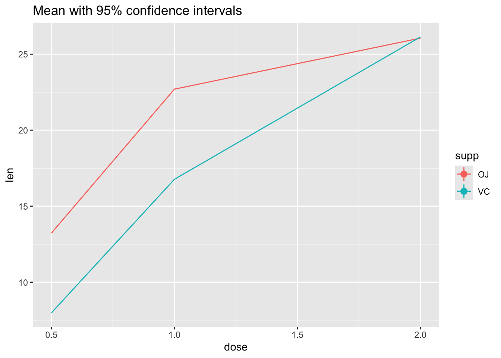
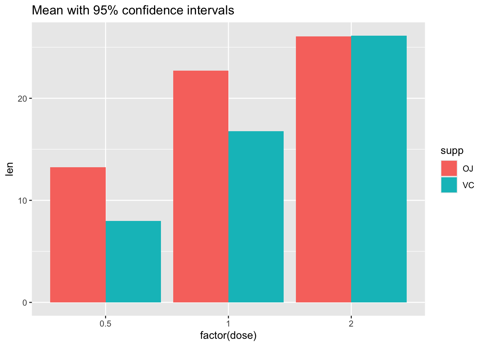

Lab 04: Distributions & Summary Statistics
BMI 5/625
Alison Hill & Steven Bedrick
1 Slides for today
2 Packages
New ones to install:
install.packages("Hmisc")
install.packages("ggbeeswarm")
install.packages("skimr")
install.packages("janitor")
install.packages("ggdist")To load:
library(tidyverse)
library(ggbeeswarm)Error in library(ggbeeswarm): there is no package called 'ggbeeswarm'library(skimr)Error in library(skimr): there is no package called 'skimr'library(janitor)
library(ggdist)3 Make Sample data
Below are simulated four distributions (n = 250 each), all with similar measures of center (mean = 0) and spread (s.d. = 1), but with distinctly different shapes.1
- A standard normal (
n); - A skew-right distribution (
s, Johnson distribution with skewness 2.2 and kurtosis 13); - A leptikurtic distribution (
k, Johnson distribution with skewness 0 and kurtosis 30); - A bimodal distribution (
mm, two normals with mean -0.95 and 0.95 and standard deviation 0.31).
#install.packages("SuppDists")
library(SuppDists)Error in library(SuppDists): there is no package called 'SuppDists'# this is used later to generate the s and k distributions
findParams <- function(mu, sigma, skew, kurt) {
value <- JohnsonFit(c(mu, sigma, skew, kurt), moment="use")
return(value)
}# Generate sample data -------------------------------------------------------
set.seed(8675309)
# normal
n <- rnorm(250) # 250 simulated draws from a normal distribution
# right-skew
s <- rJohnson(250, findParams(0.0, 1.0, 2.2, 13.0))Error in rJohnson(250, findParams(0, 1, 2.2, 13)): could not find function "rJohnson"# leptikurtic
k <- rJohnson(250, findParams(0, 1, 0, 30))Error in rJohnson(250, findParams(0, 1, 0, 30)): could not find function "rJohnson"# mixture
mm <- rnorm(250, rep(c(-1, 1), each = 50) * sqrt(0.9), sqrt(0.1))3.1 Tidy the data
Combine our four sets of samples
four <- data.frame(
dist = factor(rep(c("n", "s", "k", "mm"),
each = 250),
c("n", "s", "k", "mm")),
vals = c(n, s, k, mm)
)Error: object 'k' not found4 Explore the data
glimpse(four)Error: object 'four' not foundLet’s see what our descriptive statistics look like:
skim(four)Error in skim(four): could not find function "skim"four %>%
group_by(dist) %>%
skim()Error in skim(.): could not find function "skim"5 Histograms
For univariate distributions, Histograms are your go-to starting place.
What you want to look for:
- How many “mounds” do you see? (modality)
- If 1 mound, find the peak: are the areas to the left and right of the peak symmetrical? (skewness)
- Notice that kurtosis (peakedness) of the distribution is difficult to judge here, especially given the effects of differing binwidths.
When your data have natural “grouping”, this is a great use case for
ggplot’s facet_wrap feature; and the x- and
y-axes will be the same, and the size of histogram binwidths are also
the same. This is an example of the “small multiples” technique, in
which we are making a (potentially large!) number of
identically-formatted plots with the intention of facilitating
comparisons.
#2 x 2 histograms in ggplot
ggplot(four, aes(x = vals)) + #no y needed for visualization of univariate distributions
geom_histogram(fill = "white", colour = "black") + #easier to see for me
coord_cartesian(xlim = c(-5, 5)) + #use this to change x/y limits!
facet_wrap(~ dist) #this is one factor variable with 4 levelsError: object 'four' not found5.1 Binwidths
Always change the binwidths on a histogram. Sometimes the default in
ggplot works great, sometimes it does not.
Super narrow:
#2 x 2 histograms in ggplot
ggplot(four, aes(x = vals)) +
geom_histogram(binwidth = .1, fill = "white", colour = "black") + #super narrow bins
coord_cartesian(xlim = c(-5, 5)) +
facet_wrap(~ dist)Error: object 'four' not foundSuper wide:
#2 x 2 histograms in ggplot
ggplot(four, aes(x = vals)) +
geom_histogram(binwidth = 2, fill = "white", colour = "black") + #super wide bins
coord_cartesian(xlim = c(-5, 5)) +
facet_wrap(~ dist)Error: object 'four' not foundJust right? Pretty close to the default for this data.
#2 x 2 histograms in ggplot
ggplot(four, aes(x = vals)) +
geom_histogram(binwidth = .2, fill = "white", colour = "black") +
coord_cartesian(xlim = c(-5, 5)) +
facet_wrap(~ dist)Error: object 'four' not found5.2 Add a rug
A “rug” can help give additional insight into the underlying distribution of data points- remember, a facted histogram like this can obscure differences in sample size across groups!
#2 x 2 histograms in ggplot
ggplot(four, aes(x = vals)) +
geom_histogram(binwidth = .2, fill = "white", colour = "black") +
geom_rug() +
coord_cartesian(xlim = c(-5, 5)) +
facet_wrap(~ dist)Error: object 'four' not found6 Boxplots (medium to large N)
What you want to look for:
- The center line is the median: does the length of the distance to the upper hinge appear equal to the length to the lower hinge? (symmetry/skewness: Q3 - Q2/Q2 - Q1)
- Are there many outliers?
- Notice that modality of the distribution is difficult to judge here.
ggplot(four, aes(y = vals, x = dist)) +
geom_boxplot() +
scale_x_discrete(name="") +
scale_y_continuous(name="") +
coord_cartesian(ylim = c(-4,4))Error: object 'four' not found6.1 Add notches
ggplot notches: “Notches are used to compare groups; if the notches of two boxes do not overlap, this is strong evidence that the medians differ.” (Chambers et al., 1983, p. 62)
ggplot(four, aes(y = vals, x = dist)) +
geom_boxplot(notch = T) +
scale_x_discrete(name = "") +
scale_y_continuous(name = "") +
coord_cartesian(ylim = c(-4,4))Error: object 'four' not found6.2 Add summary statistics
We can use stat_summary() to add supplemental computed
points to the plot, corresponding to different summary statistics. Here
we are adding a diamond for the mean (see other possible shape codes here).
ggplot(four, aes(x = dist, y = vals)) +
geom_boxplot() +
stat_summary(fun.y = mean,
geom = "point",
shape = 18,
size = 4,
colour = "lightseagreen") +
coord_cartesian(ylim = c(-4, 4))Error: object 'four' not found7 Univariate scatterplots (small to medium n)
Options:
- Stripchart: “one dimensional scatter plots (or dot plots) of the given data. These plots are a good alternative to boxplots when sample sizes are small.”
- Beeswarm: “A bee swarm plot is a one-dimensional scatter plot similar to ‘stripchart’, except that would-be overlapping points are separated such that each is visible.”
7.1 Stripchart
Combining geom_jitter() + stat_summary() is the ggplot
corollary to a stripchart.
ggplot(four, aes(x = dist, y = vals)) +
geom_jitter(position = position_jitter(height = 0, width = .1),
fill = "lightseagreen",
colour = "lightseagreen",
alpha = .5) +
stat_summary(fun.y = median,
fun.ymin = median,
fun.ymax = median,
geom = "crossbar",
width = 0.5) +
scale_x_discrete(name = "") +
scale_y_continuous(name = "") +
coord_cartesian(ylim = c(-4, 4))Error: object 'four' not foundOne tip for using stripcharts: make sure to experiment with different
values of alpha, as different distributions and sample
sizes will be best served by more or less transparency (and thus more or
less apparent overlap).
7.2 Dotplot
Dotplots visualize individual datapoints; various options control details about the layout of the points.
ggplot(four, aes(x = dist, y = vals)) +
geom_dotplot(stackdir = "center",
binaxis = "y",
binwidth = .1,
binpositions = "all",
stackratio = 1.5,
fill = "lightseagreen",
colour = "lightseagreen") +
scale_x_discrete(name = "") +
scale_y_continuous(name = "") +
coord_cartesian(ylim = c(-4, 4))Error: object 'four' not found7.3 Beeswarm
Beeswarm plots
are a variation on the dot plot; ggbeeswarm has a number of
different options for controlling their layout:
install.packages("ggbeeswarm")
library(ggbeeswarm)ggplot(four, aes(x = dist, y = vals)) +
geom_quasirandom(fill = "lightseagreen",
colour = "lightseagreen") +
scale_x_discrete(name = "") +
scale_y_continuous(name = "") +
coord_cartesian(ylim = c(-4, 4))Error: object 'four' not foundggplot(four, aes(x = dist, y = vals)) +
geom_quasirandom(fill = "lightseagreen",
colour = "lightseagreen",
method = "smiley") +
scale_x_discrete(name = "") +
scale_y_continuous(name = "") +
coord_cartesian(ylim = c(-4, 4))Error: object 'four' not foundNote that beeswarm plots don’t work so well if your data is “big”. You will know your data is too big if you try the below methods and you can’t see many of the individual points (typically, N > 100).
8 Boxplots + univariate scatterplots (small to medium n)
Combining geom_boxplot() + geom_dotplot() is my personal
pick for EDA when I have small - medium data (N < 100).
ggplot(four, aes(y = vals, x = dist)) +
geom_boxplot(outlier.shape = NA) +
geom_dotplot(binaxis = 'y',
stackdir = 'center',
stackratio = 1.5,
binwidth = .1,
binpositions = "all",
dotsize = 1,
alpha = .75,
fill = "lightseagreen",
colour = "lightseagreen",
na.rm = TRUE) +
scale_x_discrete(name = "") +
scale_y_continuous(name = "") +
coord_cartesian(ylim = c(-4, 4))Error: object 'four' not foundThis gives us the “best of both worlds” in that we can see descriptive statistics about the distributions as well as see the underlying points themselves.
You can also combine geom_boxplot() + geom_jitter(). In
this case, note that the boxplot is configured to leave in the outliers,
even though it means that they will be double-plotted (once from
geom_boxplot() and once from geom_jitter()).
This is to demonstrate the jittered points are only being shifted from
left to right, because I set the jitter height = 0. What
happens if you tell position_jitter() to do something
different?
ggplot(four, aes(y = vals, x = dist)) +
geom_boxplot(width = .5) + #note that the outlier points will be double-plotted
geom_jitter(fill = "lightseagreen",
colour = "lightseagreen",
na.rm = TRUE,
position = position_jitter(height = 0, width = .1),
alpha = .5) +
scale_x_discrete(name = "") +
scale_y_continuous(name = "") +
coord_cartesian(ylim = c(-4, 4))Error: object 'four' not found9 Density plots (medium to large n)
For larger sample sizes, showing the actual points themselves becomes impractical, and density estimate plots become a better solution. A density plot is a visualization of a kernel density estimate, ``a non-parametric way to estimate the probability density function of a random variable.’’ (from wikipedia).
A simple kernel density plot is very useful on its own, but there are many variations. One popular one is the violin plot, which is essentially a boxplot except with a mirrored KDE plot instead of a rectangular box. Another variation combines a stripchart and a scatter plot to form a “beanplot”, whose name “stems from green beans. The density shape can be seen as the pod of a green bean, while the scatter plot shows the seeds inside the pod.”
9.1 Density plots
ggplot’s geom_density() will compute and
plot a KDE:
ggplot(four, aes(x = vals)) +
geom_density(fill = "lightseagreen") +
coord_cartesian(xlim = c(-5, 5)) +
facet_wrap(~ dist)Error: object 'four' not foundInstead of doing a facet_wrap, I could make just one
plot showing all four distributions. To make each distribution a
different color, set the fill within the aes,
and assign it to the factor variable dist. Since now all
four will be plotted on top of each other, add an alpha
level to make the color fill transparent (0 = completely transparent; 1
= completely opaque).
# Density plots with semi-transparent fill
ggplot(four, aes(x = vals, fill = dist)) +
geom_density(alpha = .5)Error: object 'four' not foundKeiran Healy has a lovely essay discussing different design approaches to this sort of plot!
9.1.1 Add a histogram
Sometimes one wants to combine a histogram and a density plot; while
these are pretty easy to make in ggplot, there are some
gotchas. In the plot below, note that the y-axis is different from if
you just plotted the histogram. In fact, when interpreting this plot,
the y-axis is only meaningful for reading density. It is meaningless for
interpreting the histogram.
ggplot(four, aes(x = vals)) +
geom_histogram(aes(y = ..density..),
binwidth = .5,
colour = "black",
fill = "white") +
geom_density(alpha = .5, fill = "lightseagreen") +
coord_cartesian(xlim = c(-5,5)) +
facet_wrap(~ dist)Error: object 'four' not foundQuestion to consider: what does the y-axis represent in a histogram? What does it represent in a density plot?
9.2 Violin plots
ggplot’s built-in geom_violin() will make
simple violin plots:
My advice: always set color = NA for
geom_violin. For fill, always set alpha.
ggplot(four, aes(x = dist, y = vals)) +
geom_violin(color = NA,
fill = "lightseagreen",
alpha = .5,
na.rm = TRUE,
scale = "count") + # max width proportional to sample size
coord_cartesian(ylim = c(-4, 4))Error: object 'four' not found9.2.1 Add a boxplot
A combination of geom_violin() + geom_boxplot() is my
personal pick for EDA when I have large data (N > 100).
ggplot(four, aes(x = dist, y = vals)) +
geom_boxplot(outlier.size = 2,
colour = "lightseagreen",
fill = "black",
na.rm = TRUE,
width = .1) +
geom_violin(alpha = .2,
fill = "lightseagreen",
colour = NA,
na.rm = TRUE) +
coord_cartesian(ylim = c(-4, 4))Error: object 'four' not foundNote that it is just as easy to layer a univariate scatterplot over a
violin plot, just by replacing the geom_boxplot with a
different geom as shown above. Lots of combination plots are
possible!
10 Split violin
For more sophisticated variations, we turn to the ggdist
package:
install.packages("ggdist")
library(ggdist)It contains geoms and stats that, when used
in combination with one another, will enable us to build many different
kinds of distribution visualizations.
For example, one popular variation on the violin plot is the “split violin” plot, which removes the mirroring of the violin plot and uses that space for other purposes.
For a traditional violin plot, use stat_slab()
ggplot(four, aes(x=dist, y=vals)) +
stat_slab(fill="lightseagreen", trim=FALSE, side="both")Error: object 'four' not foundTo split, and only half one side, alter the side
setting:
ggplot(four, aes(x=dist, y=vals)) +
stat_slab(fill="lightseagreen", trim=FALSE, side="right")Error: object 'four' not foundPersonally, I prefer to smoosh things down a little bit, for a full “split-violin” effect:
ggplot(four, aes(x=dist, y=vals)) +
stat_slab(fill="lightseagreen", trim=FALSE, side="right", scale=0.5)Error: object 'four' not foundggdist has many variations of this basic plot, including
ones with interval bars (stat_slabinterval()), etc.:
ggplot(four, aes(x=dist, y=vals)) +
stat_slabinterval(fill="lightseagreen", trim = FALSE, side="right", scale=0.5) Error: object 'four' not foundAnd of course, we can re-orient our plot by changing the
x and y aesthetics:
ggplot(four, aes(y = dist, x = vals)) +
stat_slabinterval(fill="lightseagreen", trim = FALSE, side="right", scale=0.5)Error: object 'four' not found11 Ridgeline plots
For ridgeline plots, it makes the most sense to have the factor
variable (like dist) be on the y-axis. Ridgeline plots are
indicated when there is a relatively large number of levels to the
factor, and when comparison across factors is important.
ggplot(four, aes(y = dist, x = vals)) +
stat_slab(fill="lightseagreen", trim = FALSE, side="right", scale=0.5)Error: object 'four' not found(This isn’t an optimal use case for a ridgeline plot, we’re just demonstrating…)
As an alternative to ggdist, you may want to check out
ggridges,
a package entirely dedicated to ridgeline plots.
12 Raincloud plots
By combining stat_slab and stat_dots, we
can create a “raincloud” plot:
ggplot(four, aes(y = dist, x = vals)) +
stat_slab(fill="lightseagreen", trim = FALSE, side="right", scale=0.5) +
stat_dots(side="left", alpha=0.5)Error: object 'four' not found13 Plotting summary statistics
Moving back to standard ggplot territory, let’s revisit
stat_summary. A more general way to look at
stat_summary is that it applies a “summary function” to the
variable mapped to y at each x value.
13.1 Means and error bars
The simplest summary function is mean_se, which returns
the mean and the mean plus its standard error on each side. Thus,
stat_summary will calculate and plot the mean and standard
errors for the y variable at each x value.
The default geom is “pointrange” which places a dot at the central y value and extends lines to the minimum and maximum y values. Other geoms you might consider to display summarized data:
geom_errorbargeom_pointrangegeom_linerangegeom_crossbar
There are a few summary functions from the Hmisc package
which are reformatted for use in stat_summary(). They all
return aesthetics for y, ymax, and
ymin.
mean_cl_normal()- Returns sample mean and 95% confidence intervals assuming normality (i.e., t-distribution based)
mean_sdl()- Returns sample mean and a confidence interval based on the standard deviation times some constant
mean_cl_boot()- Uses a bootstrap method to determine a confidence interval for the sample mean without assuming normality.
median_hilow()- Returns the median and an upper and lower quantiles.
ggplot(four, aes(x = dist, y = vals)) +
stat_summary(fun.data = "mean_se")Error: object 'four' not foundggplot(four, aes(x = dist, y = vals)) +
stat_summary(fun.y = "mean", geom = "point") +
stat_summary(fun.y = "max", geom = "point", shape = 21)Error: object 'four' not foundggplot(four, aes(x = dist, y = vals)) +
stat_summary(fun.data = median_hilow)Error: object 'four' not foundYou may have noticed two different arguments that are potentially
confusing: fun.data and fun.y. If the function
returns three values, specify the function with the argument
fun.data. If the function returns one value, specify
fun.y. See below.
x <- c(1, 2, 3)
mean(x) # use fun.y[1] 2mean_cl_normal(x) # use fun.dataError in `mean_cl_normal()`:
! The package "Hmisc" is required.Confidence limits may give us a better idea than standard error
limits of whether two means would be deemed statistically different when
modeling, so we frequently use mean_cl_normal or
mean_cl_boot in addition to mean_se.
13.2 Connecting means with lines
Using the ToothGrowth dataset
data(ToothGrowth)
tg <- ToothGrowth# Standard error of the mean
ggplot(tg, aes(x = dose, y = len, colour = supp)) +
stat_summary(fun.data = "mean_se") +
ggtitle("Mean +/- SE")
# Connect the points with lines
ggplot(tg, aes(x = dose, y = len, colour = supp)) +
stat_summary(fun.data = "mean_se") +
stat_summary(fun.y = mean, geom = "line") +
ggtitle("Mean +/- SE")
# Use 95% confidence interval instead of SEM
ggplot(tg, aes(x = dose, y = len, colour = supp)) +
stat_summary(fun.data = "mean_cl_normal") +
stat_summary(fun.y = mean, geom = "line") +
ggtitle("Mean with 95% confidence intervals")
# The errorbars overlapped, so use position_dodge to move them horizontally
pd <- position_dodge(0.1) # move them .05 to the left and right
ggplot(tg, aes(x = dose, y = len, colour = supp)) +
stat_summary(fun.data = "mean_cl_normal", position = pd) +
stat_summary(fun.y = mean, geom = "line", position = pd) +
ggtitle("Mean with 95% confidence intervals")Not the best example for this geom, but another good one for showing variability…
# ribbon geom
ggplot(tg, aes(x = dose, y = len, colour = supp, fill = supp)) +
stat_summary(fun.y = mean, geom = "line") +
stat_summary(fun.data = mean_se, geom = "ribbon", alpha = .5)
13.3 Bars with error bars
This is not an ideal practice, but sometimes you must…
# Standard error of the mean; note positioning
ggplot(tg, aes(x = factor(dose), y = len, fill = supp)) +
stat_summary(fun.y = mean, geom = "bar", position = position_dodge(width = .9)) +
stat_summary(fun.data = mean_se, geom = "linerange", position = position_dodge(width = .9)) +
ggtitle("Mean +/- SE")
The key trick here is telling stat_summary to use the
“bar” geom instead of its default (point or linerange).
Note that it is important to be clear about whether your error bars represent the standard error of the mean, or a true confidence interval, which can be computed as follows:
# Use 95% confidence interval instead of SEM
ggplot(tg, aes(x = factor(dose), y = len, fill = supp)) +
stat_summary(fun.y = mean, geom = "bar", position = position_dodge(width = .9)) +
stat_summary(fun.data = mean_cl_boot, geom = "linerange", position = position_dodge(width = .9)) +
ggtitle("Mean with 95% confidence intervals")
More help here: http://www.cookbook-r.com/Graphs/Plotting_means_and_error_bars_(ggplot2)/
The code for these distributions originally came from Hadley Wickham’s paper on “40 years of boxplots”↩︎